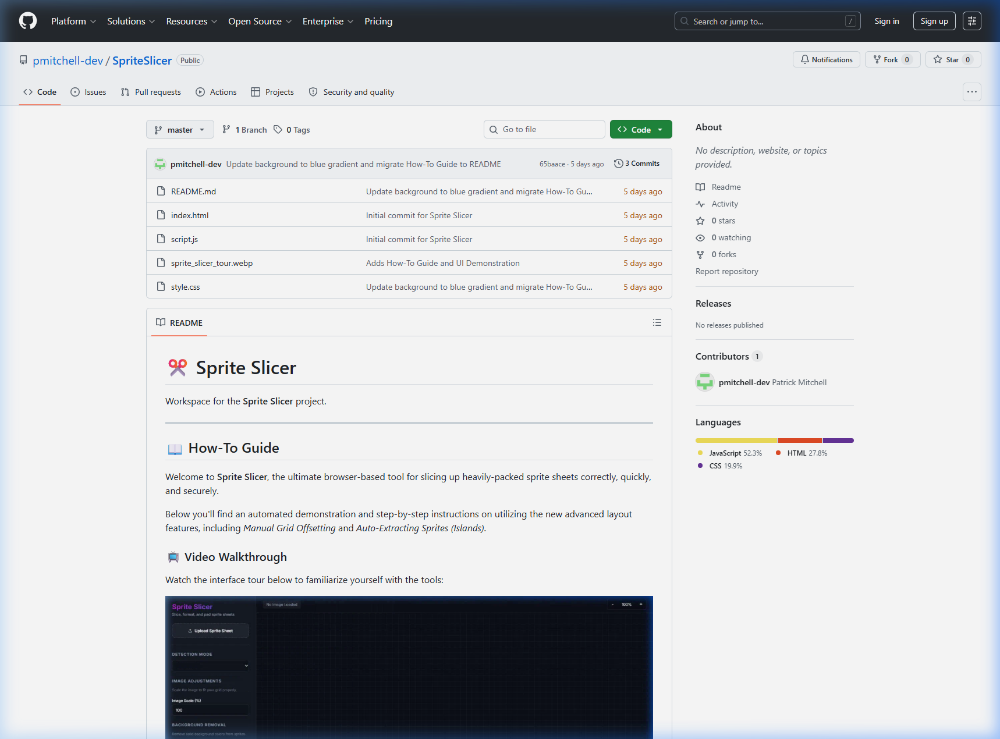

A high-performance, browser-based utility for automated sprite sheet processing, featuring island detection and intelligent grid management.

Advanced island detection algorithms automatically identify and extract individual sprites from non-uniform sheets with zero configuration.
Precise control over grid-based sheets. Adjust offsets, cell dimensions, and padding in real-time with visual overlays.
Intelligent padding management ensures that extracted sprites are perfectly centered and framed, ready for immediate game engine import.
Built entirely on web technologies (HTML5 Canvas & JS), SpriteSlicer runs securely in your browser—no installation required for rapid asset processing.
| Feature | Implementation | Benefit |
|---|---|---|
| Island Detection | Recursive pixel flood-fill | Accurate sprite identification |
| Grid Orchestration | Dynamic HTML5 Canvas mapping | Flexible sprite sheet alignment |
| Real-time I/O | Browser File System Access API | Instant asset processing |
| UI Design | Vanilla CSS Glassmorphism | Lightweight, modern dashboard |